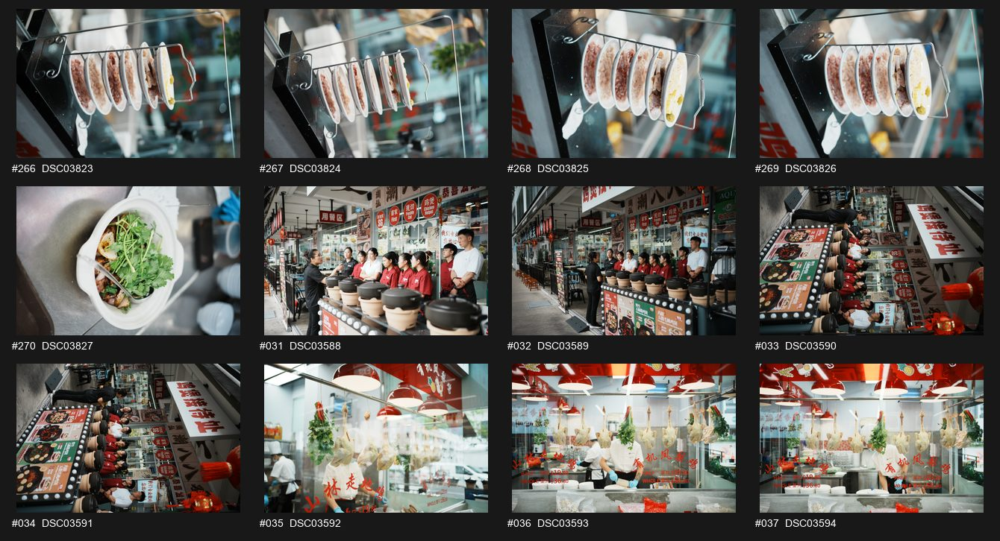
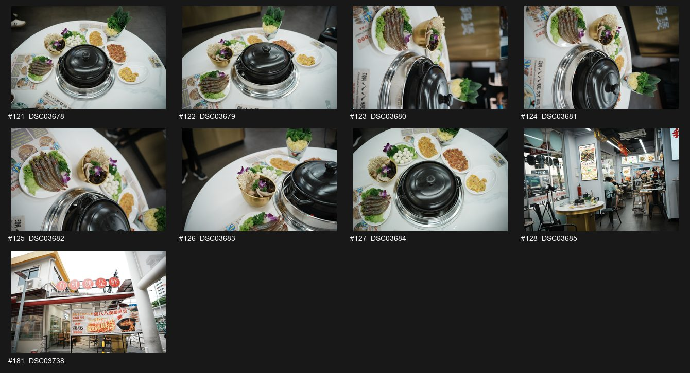

川式黑金麻辣鸡煲 — Sichuan Black Gold Mala

Photographer candidates (12 options). Pick the one closest to the Hero prompt, upload to Higgsfield as the seed image.
Top-down hero shot of 川式黑金麻辣鸡煲 (Sichuan Black Gold Mala chicken hotpot), deep glossy red broth with floating chili pods and Sichuan peppercorns, fresh chicken cuts arranged in the bubbling pot, cream linen background, restrained Chaoshan heritage props (古铜金 brass spoon, 墨黑 ceramic dipping bowl), warm overhead lighting, food editorial style, photoreal, 4K
Extreme macro of glistening red chili oil rising on Black Gold Mala broth surface, individual peppercorns and star anise visible, light steam swirl, shallow depth of field, moody side-lit, 紫红 #B7342A red dominant, premium food magazine look
Mid-action shot of a hand using long bamboo chopsticks to lift a tender chicken thigh out of the bubbling Black Gold Mala pot, droplets of red broth mid-air, steam visible, warm tungsten lamp light, dark wood table, Chaoshan calligraphy menu card softly out of focus in background
Mala pot centered on a family round table, 6 dipping sauce bowls arranged around it, hands of 3 family members reaching in, restaurant ambient red-lantern glow, slight motion blur on hands, evening warmth, 慢火细煮 mood
野生石橄榄鸡煲 — Wild Stone Olive (TCM)

Photographer candidates (5 options). Pick the one closest to the Hero prompt, upload to Higgsfield as the seed image.
Top-down hero of 野生石橄榄鸡煲, clear amber-gold broth with whole wild stone olives, free-range chicken pieces, red dates and goji berries floating, served in earthy clay pot, cream linen, neutral apothecary props (small TCM ingredient bowls), soft natural daylight, 温润食补 nourishing mood, photoreal
Macro close-up of a single wild stone olive (橄榄) cracked open in the amber broth, herbal aroma steam, golden translucent liquid, shallow depth of field, soft window light, editorial premium
Slow pour shot — ladle dipping into clay pot and rising with steaming amber broth, single chicken piece visible, droplets cascading, dark green Chaoshan backdrop (潮汕绿 #1E5A44), morning natural light
Cozy private dining nook with the clay pot in foreground, soft red lantern in background bokeh, two ceramic cups of warm tea beside, traditional wooden table, quiet domestic mood, slow Sunday lunch feel
现切鸡 — Fresh chicken cuts (Process · 鲜)

Photographer candidates (5 options). Pick the one closest to the Hero prompt, upload to Higgsfield as the seed image.
Top-down hero of freshly cut Chaoshan free-range chicken laid on a black slate board, raw glistening pieces (drumstick, thigh, breast, wing) arranged with a single bone cleaver, surrounding ginger slices and spring onion, cream linen, soft directional north light, 鲜 freshness as story, photoreal high-res
Macro close-up of the freshly cut chicken showing skin texture, golden subcutaneous fat layer, bone marrow at cleaver-cut edge, tiny droplet of water on skin, micro detail, cold-toned light, food anatomy editorial
Mid-cut moment — chef's hand bringing cleaver down on a whole chicken, slight motion blur on the blade, wood butcher block, raw aesthetic, side-lit, dark background, 现切 (just-cut) story
Wider scene of the open chicken-cutting station inside outlet, hanging fresh chickens on hooks, neon red 现切 sign softly in background bokeh, warm fluorescent + red light mix, documentary feel
蘸料哲学 — Dipping Sauce Philosophy (Side dish hero)

Photographer candidates (12 options). Pick the one closest to the Hero prompt, upload to Higgsfield as the seed image.
Top-down flat lay of Chao 88's signature dipping sauce wheel — 6 to 8 small white ceramic bowls in a circle, each with a different sauce (沙茶, 蒜泥, 辣椒油, 葱姜油, 豉油, 麻酱), labeled with calligraphy tags, cream linen base, brass spoon centerpiece, soft daylight, editorial flat lay, 蘸料哲学 dipping philosophy
Macro close-up of one bowl of chili oil 辣椒油 with crispy chili flakes floating, glossy oil surface reflecting warm light, single peppercorn beside the bowl, premium texture
A hand dipping a piece of just-cooked chicken into one of the dipping bowls, droplet of sauce falling, warm tungsten light, dark wood table, slight motion blur, anticipation moment
All 8 dipping bowls fanned out on a long Chaoshan banquet table, family hands reaching in from 4 sides, warm red lantern glow, communal feast feeling, slight overhead angle
Bubbling broth close-up (Mood · 鲜)

Photographer candidates (11 options). Pick the one closest to the Hero prompt, upload to Higgsfield as the seed image.
Cinematic close-up of a clay pot of chicken broth gently bubbling at simmer, single large bubble breaking the surface, herbal aroma steam rising in clean column, warm honey-amber broth, slightly off-center composition, dark moody background, side-lit golden hour, 慢火细煮 slow-cook story, photoreal
Extreme macro of a single soup bubble forming and bursting on broth surface, droplets suspended mid-air, condensation on the pot rim, surface tension micro detail, slow-motion still
Ladle gliding through the surface of the broth, displacing a goji berry and a red date, steam puffing upward, hand barely visible at top of frame, warm side light
Wider scene — clay pot on portable burner, soft blue gas flame underneath, dim restaurant background with red lantern bokeh, family member silhouettes out of focus, quiet anticipation
Full table hero spread (Communal · 养)

Photographer candidates (8 options). Pick the one closest to the Hero prompt, upload to Higgsfield as the seed image.
Stunning overhead top-down hero of a full Chaoshan family feast — central hotpot of clear chicken broth, surrounded by 8-10 small dishes (fresh chicken cuts, dipping sauces, leafy greens, dumplings, rice bowls, beer), warm wood round table, family hands holding chopsticks reaching into frame from edges, cream linen runner, warm overhead light, abundance, 团圆 reunion mood, photoreal editorial
Macro detail of the table's centerpiece hotpot with multiple bowls clustered tight around it, each plate filled, perfect arrangement, slight steam wisp from pot, top-down food editorial
Mid-meal mid-action — multiple chopsticks crossing the pot, one hand lifting chicken out, another adding dipping sauce, warm motion blur, joyful chaos
Pull back wider — table surrounded by 6 family members of all ages, smiles, red lanterns above, restaurant warmth, 老少皆宜 generational mood, candid feeling
Outlet — Horne Road (Storefront daytime)

Photographer candidates (12 options). Pick the one closest to the Hero prompt, upload to Higgsfield as the seed image.
Front-facing eye-level hero of the Chao 88 Horne Road outlet storefront in daytime Singapore, clear sky, red signage "潮八八现切鸡煲" boldly visible, large window showing fresh-cut chicken display inside, cream and red palette, soft late-morning light, slight wide-angle, street level, lifestyle editorial
Close-up of the storefront signage in red calligraphy 潮八八, with a hint of the menu board beside, warm reflected daylight, paint texture, brand asset focus
Customers walking in through the glass door, slight motion blur on figures, doorbell chime moment, sunlight catching the doorframe, candid street photography style
Wider street view showing the Horne Road context — neighboring shops, parked motorbikes, MRT signage hinting in distance, Chao 88 outlet glowing red at center, daytime SG neighborhood mood
Outlet — Upper Paya Lebar (Storefront)

Photographer candidates (12 options). Pick the one closest to the Hero prompt, upload to Higgsfield as the seed image.
Hero shot of the Chao 88 Upper Paya Lebar outlet storefront, evening blue-hour transition, red signage glowing, warm interior light spilling onto sidewalk, group of customers about to enter, lifestyle editorial wide shot
Macro close-up of the menu poster wall beside the entrance — dish photography, Chinese calligraphy headlines, prices, brand mark, warm shop-window light
Server in red apron stepping out of the entrance to welcome guests, slight motion, warm interior glow framing them, street-side candid
Wider blue-hour street shot — Paya Lebar context, neighboring storefronts dim, Chao 88 outlet warm and inviting like a heritage lantern, photoreal night-mood editorial
Outlet — Bukit Timah (Storefront night)

Photographer candidates (12 options). Pick the one closest to the Hero prompt, upload to Higgsfield as the seed image.
Cinematic night exterior of the Chao 88 Bukit Timah outlet, deep blue sky, glowing red 现切 sign as the only warm light source, reflection on wet pavement after light rain, slight wide-angle, moody atmosphere, Wong Kar-wai-style color palette (deep reds, neon spill)
Macro close-up of the neon 现切 (fresh-cut) sign at night, reds blooming slightly, electrical hum implied, brand-art focus shot
Late-night customer leaving the outlet with a takeaway bag, warm light spilling behind them, soft step into the cool blue street, slight motion blur
Wide pull-back showing Bukit Timah surroundings at night — quiet street, single car passing with red tail-lights, Chao 88 outlet as a warm beacon in the cool blue scene
Outlet — SAFRA Punggol (New fit-out reveal)

Photographer candidates (12 options). Pick the one closest to the Hero prompt, upload to Higgsfield as the seed image.
Hero "first look" shot of the brand new Chao 88 SAFRA Punggol outlet interior — fresh fit-out, new red lacquer panels, gold lighting fixtures, untouched cream banquette seating, brand calligraphy mural on far wall, 50mm lens, soft morning light through window, magazine-style architectural editorial
Macro detail of a brass light fixture above a banquette, cream and red palette, design-magazine close-up
Construction handover moment — owner Joanna unveiling the storefront signage being installed, hand caught mid-gesture, daylight, behind-the-scenes documentary tone
Wide architectural shot of the empty new outlet ready for opening — clean tables, no customers yet, anticipation mood, opening-day feel, slight golden-hour through the windows
Interior ambience — Heritage warmth

Photographer candidates (12 options). Pick the one closest to the Hero prompt, upload to Higgsfield as the seed image.
Cinematic interior hero of a Chao 88 dining room — long Chaoshan banquet wooden tables, red cushioned seating, hanging red lanterns above, calligraphy menu cards on wall, soft tungsten warm lighting, empty pre-service moment, sense of heritage and quiet, photoreal editorial
Macro close-up of a single red lantern hanging from the ceiling, paper texture, gold calligraphy, slight tungsten warmth, lens flare hint, brand-mood asset
Server walking down the central aisle of the dining room carrying a clay pot of steaming chicken broth, slight motion blur, warm light path on floor, candid documentary
Wider room scene — half-full dinner service, soft chatter implied, lantern glow, family tables in deep background bokeh, foreground table with empty pot waiting, 慢火细煮 mood
Chef / Team portrait (People · 养)

Photographer candidates (12 options). Pick the one closest to the Hero prompt, upload to Higgsfield as the seed image.
Editorial chef portrait — Chao 88 head chef in white tunic with red apron, standing in front of the fresh-cut chicken hanging rack, cleaver held confidently at waist, calm intense gaze to camera, warm tungsten light, slight smile, Chaoshan heritage backdrop, photoreal premium portrait
Close-up of chef's hands holding the cleaver mid-cut on a fresh chicken, focus on hands and blade, motion sharpness, golden ambient light, craft-focused detail
Chef plating fresh-cut chicken on a black slate board with practiced choreography, hands moving fast, slight blur, behind-the-line documentary feel
Wider team shot — head chef in center, surrounded by 3-4 line cooks and servers in red aprons, all looking at camera, kitchen pass behind them, warm restaurant light, brand family mood
Customer dining moment (Community · 养)

Photographer candidates (12 options). Pick the one closest to the Hero prompt, upload to Higgsfield as the seed image.
Candid hero of a 3-generation Singaporean family seated around a round table with the Chao 88 hotpot at center, grandparents, parents, and teenage kids sharing chicken, laughter mid-frame, warm tungsten lantern light overhead, photoreal documentary editorial, 团圆 reunion mood
Macro detail of a child reaching into the pot with chopsticks, parent's hand guiding gently, warm light catching the chicken being lifted, intergenerational moment
Mid-cheers moment — family raising glasses of warm tea / beer over the hotpot, smiles, slight motion blur on glasses, warm communal feel, 干杯 toast
Wider room scene — multiple tables of customers, the family in foreground as the hero, red lanterns and Chaoshan calligraphy in background bokeh, packed-house energy, warm hour
Brand IP — 吃鸡图谱 (Chicken Cuts Cooking Guide infographic)

Photographer candidates (12 options). Pick the one closest to the Hero prompt, upload to Higgsfield as the seed image.
Top-down infographic-style flat lay of "吃鸡图谱" (chicken cuts cooking guide) — a whole laid-out free-range chicken on cream linen, each cut labeled with Chaoshan calligraphy tags (鸡腿/leg, 鸡胸/breast, 鸡翼/wing, 鸡背/back), tiny brass icons indicating ideal cooking method (涮 dip-cook, 焗 braise, 炖 stew), educational editorial flat lay, brand IP asset
Macro of one calligraphy label tag on the chicken cut diagram, ink texture, brass-pin holding the tag, premium publishing feel
Chef's hand placing a numbered label beside a chicken cut, mid-gesture, gentle daylight, behind-the-scenes of brand-IP creation
Wider flat lay also showing complementary props — small Chaoshan ceramic bowls, brass spoon, bamboo chopsticks, dipping sauce wheel hinted at frame edge, brand book-style spread
Mid-campaign promo offer (Activation graphic)

Photographer candidates (9 options). Pick the one closest to the Hero prompt, upload to Higgsfield as the seed image.
Graphic poster hero — central image of the Chao 88 hotpot table spread (top-down) framed by a circular red Chaoshan-pattern border, bold calligraphy headline "潮八八 · 暑期家宴" (Summer Family Feast), promo offer slot (e.g. 1 free side dish with 4-pax order) as small subhead, brand red #B7342A + cream #F6E9D3 + gold #C89A5B palette, social-poster composition 1080×1350, designed feel + photoreal hero
Close-up of the promo CTA section of the poster — calligraphy seal, gold-foil-look outline, QR code placeholder, premium printed-poster texture
Lifestyle activation moment — hand holding up a phone showing the Chao 88 promo poster on Instagram feed, soft window light, behind-the-scenes meta-shot
Outlet entrance with the printed promo poster on a standee outside the door, evening warm light, passers-by glancing at it, lifestyle activation feel